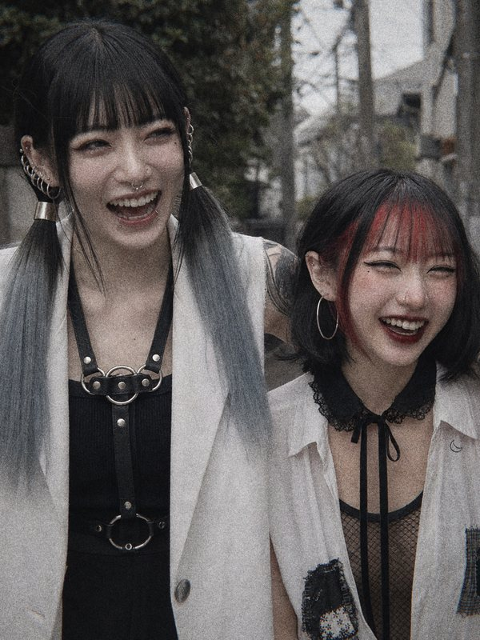
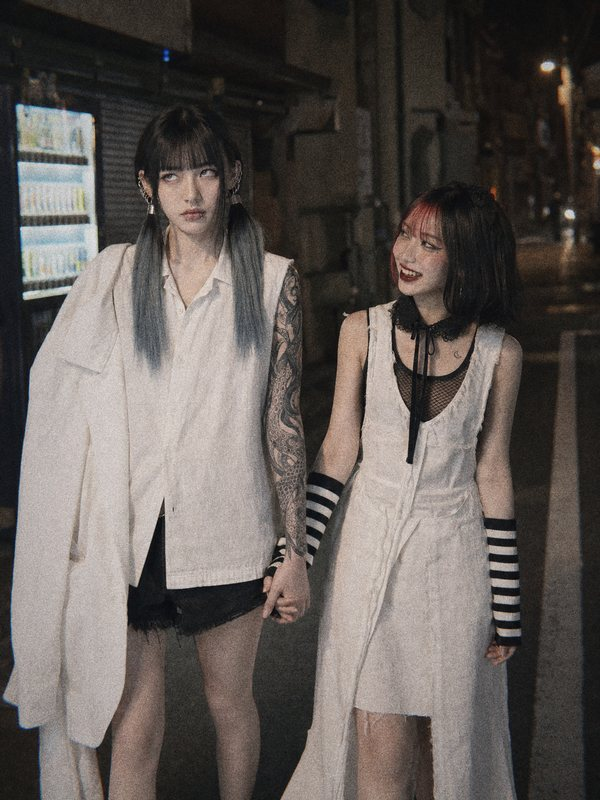
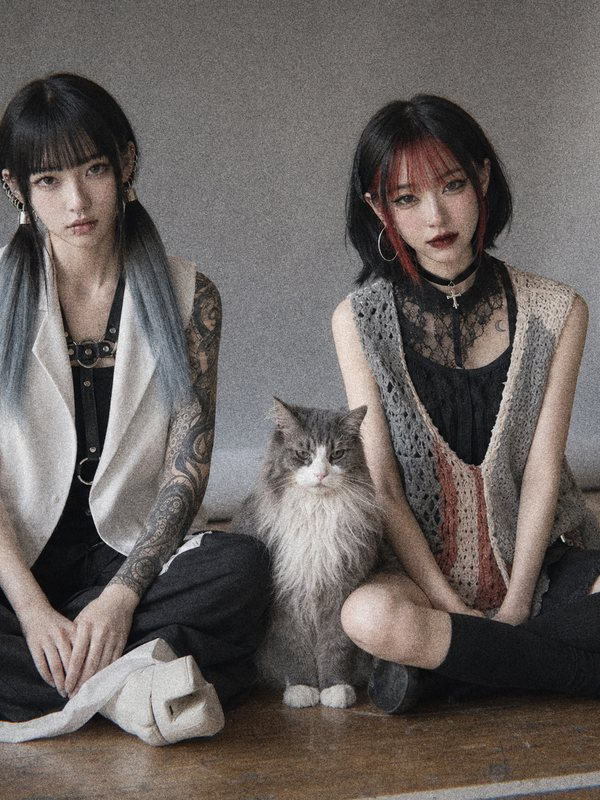

New Single
Dark Dopamine
配信開始
Teaser 5 sec
han-bun, han-bun, han-bun-bun
Follow 04
Film 06



Half of me is still asleep
New Single
配信開始
han-bun, han-bun, han-bun-bun



Half of me is still asleep